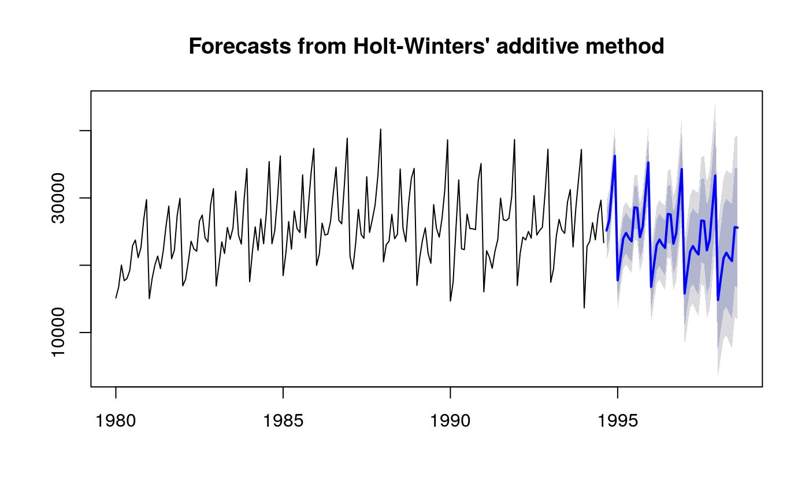
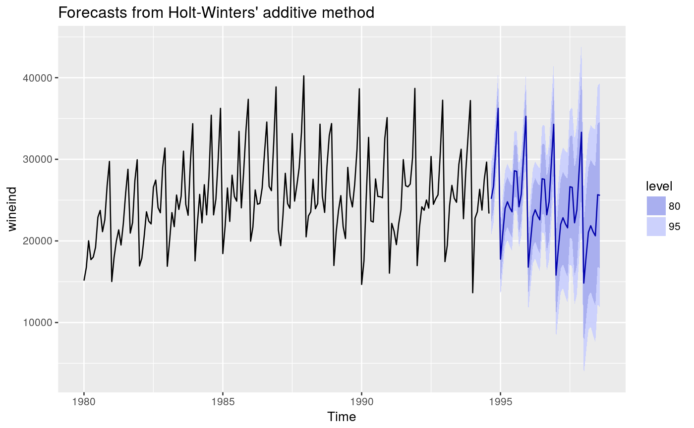
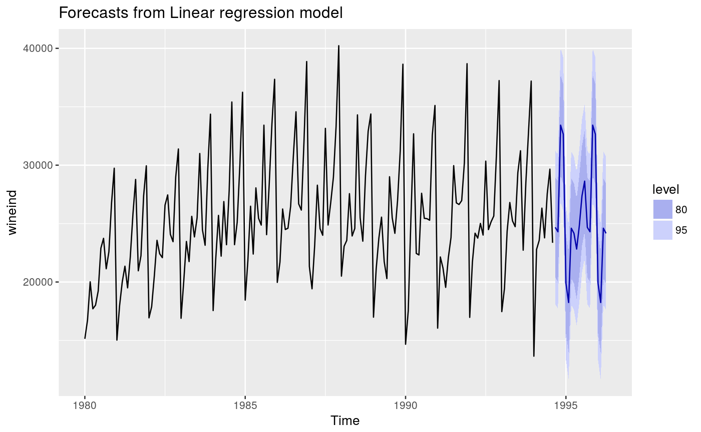
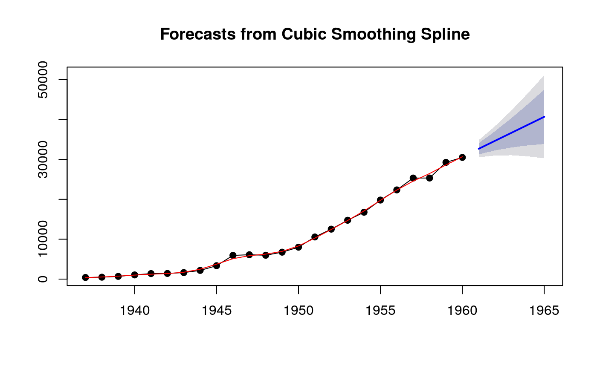
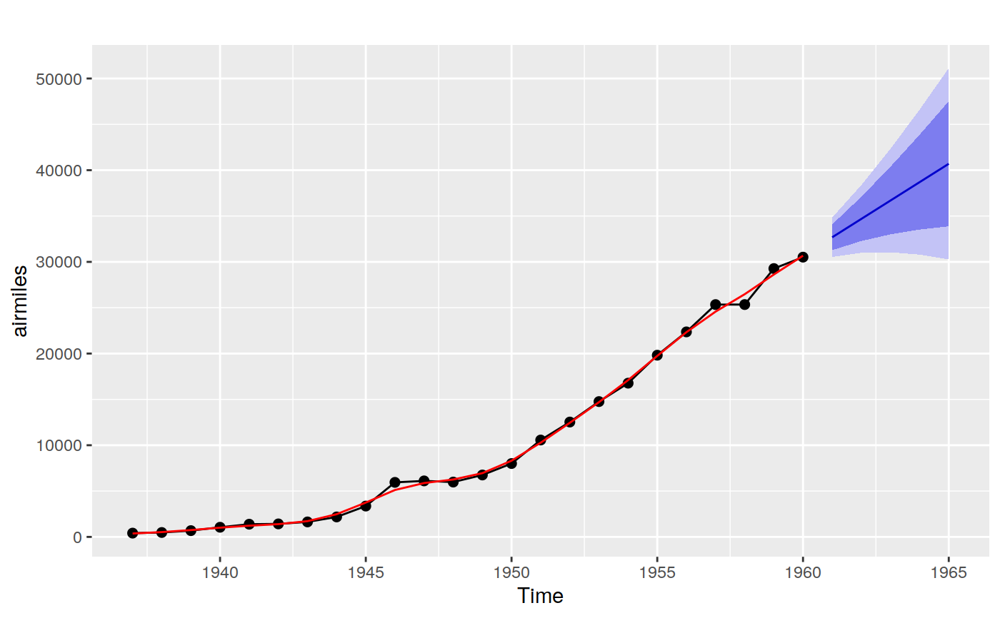

Plots historical data with forecasts and prediction intervals.
# S3 method for forecast plot(x, include, PI = TRUE, showgap = TRUE, shaded = TRUE, shadebars = (length(x$mean) < 5), shadecols = NULL, col = 1, fcol = 4, pi.col = 1, pi.lty = 2, ylim = NULL, main = NULL, xlab = "", ylab = "", type = "l", flty = 1, flwd = 2, ...) # S3 method for forecast autoplot(object, include, PI = TRUE, shadecols = c("#596DD5", "#D5DBFF"), fcol = "#0000AA", flwd = 0.5, ...) # S3 method for splineforecast autoplot(object, PI = TRUE, ...) # S3 method for forecast autolayer(object, series = NULL, PI = TRUE, showgap = TRUE, ...) # S3 method for splineforecast plot(x, fitcol = 2, type = "o", pch = 19, ...)
| x | Forecast object produced by |
|---|---|
| include | number of values from time series to include in plot. Default is all values. |
| PI | Logical flag indicating whether to plot prediction intervals. |
| showgap | If |
| shaded | Logical flag indicating whether prediction intervals should be
shaded ( |
| shadebars | Logical flag indicating if prediction intervals should be
plotted as shaded bars (if |
| shadecols | Colors for shaded prediction intervals. To get default
colors used prior to v3.26, set |
| col | Colour for the data line. |
| fcol | Colour for the forecast line. |
| pi.col | If |
| pi.lty | If |
| ylim | Limits on y-axis. |
| main | Main title. |
| xlab | X-axis label. |
| ylab | Y-axis label. |
| type | 1-character string giving the type of plot desired. As for
|
| flty | Line type for the forecast line. |
| flwd | Line width for the forecast line. |
| ... | Other plotting parameters to affect the plot. |
| object | Forecast object produced by |
| series | Matches an unidentified forecast layer with a coloured object on the plot. |
| fitcol | Line colour for fitted values. |
| pch | Plotting character (if |
None.
autoplot will produce a ggplot object.
plot.splineforecast autoplot.splineforecast
Hyndman and Athanasopoulos (2014) Forecasting: principles and practice, OTexts: Melbourne, Australia. http://www.otexts.org/fpp/
autoplot(wine.fit)fit <- tslm(wineind ~ fourier(wineind,4)) fcast <- forecast(fit, newdata=data.frame(fourier(wineind,4,20))) autoplot(fcast)autoplot(fcast)